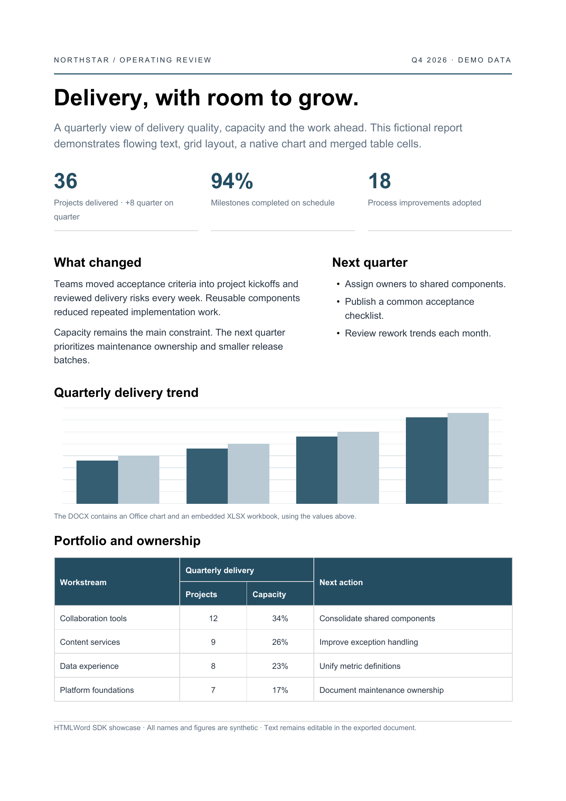

保留文档内容
文字、列表与合并表格保留为可编辑对象。
HTML → DOCX / v0.1.0
将静态 HTML/CSS 转成可编辑 DOCX。支持原生段落、表格、显式数据图表、复选框和自然分页，需要 Chromium。
go get github.com/xinhaolin/htmlToWord@v0.1.0Go 1.23+ · macOS / Linux · Chrome / Chromium

文字、列表与合并表格保留为可编辑对象。
显式图表数据写入原生图表和 XLSX；checkbox 写为内容控件。
追加整段文字后，由办公软件重新排版和分页。
可复现起点
转换针对静态 HTML；脚本不执行。浏览器与办公软件使用不同的布局模型，复杂 CSS 会产生偏差。图表需要显式数据注解，完整客户端图表数据编辑仍需验证。
阅读支持范围 ↗